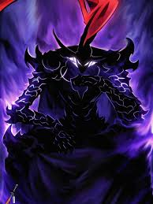

More info
(taken from google)The story follows Tanjiro Kamado, a kind-hearted teenager whose life is shattered when a demon kills his family and turns his younger sister, Nezuko, into a demon. To avenge his family and find a cure to turn Nezuko back into a human, Tanjiro joins the Demon Slayer Corps, an elite, secret organization dedicated to protecting humanity from man-eating demons

More info
(taken from google)Sung Jinwoo is an E-rank hunter, infamously known as "the weakest weapon of humanity". He constantly risks his life in low-level dungeons to pay for his mother's medical bills.